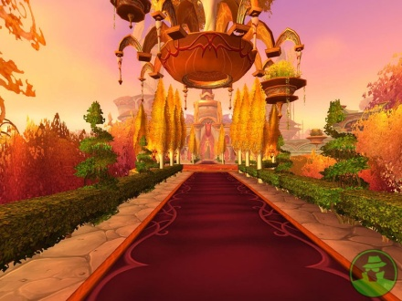

back
Sunstride

Sunstride is the second largest elven city on the continent and the largest city in Rannikkyo. It is a place of wonder, the city is majestic and vibrant with magic. It is the pride of the elfs and rightfully so. The elven king reside in its castle, but unfortunately the city is not too accepting of strangers from other race, especially dwarves.
The palace is the central landmark of the city, but Sunstride is also well known for its top of the art Magical Academy.